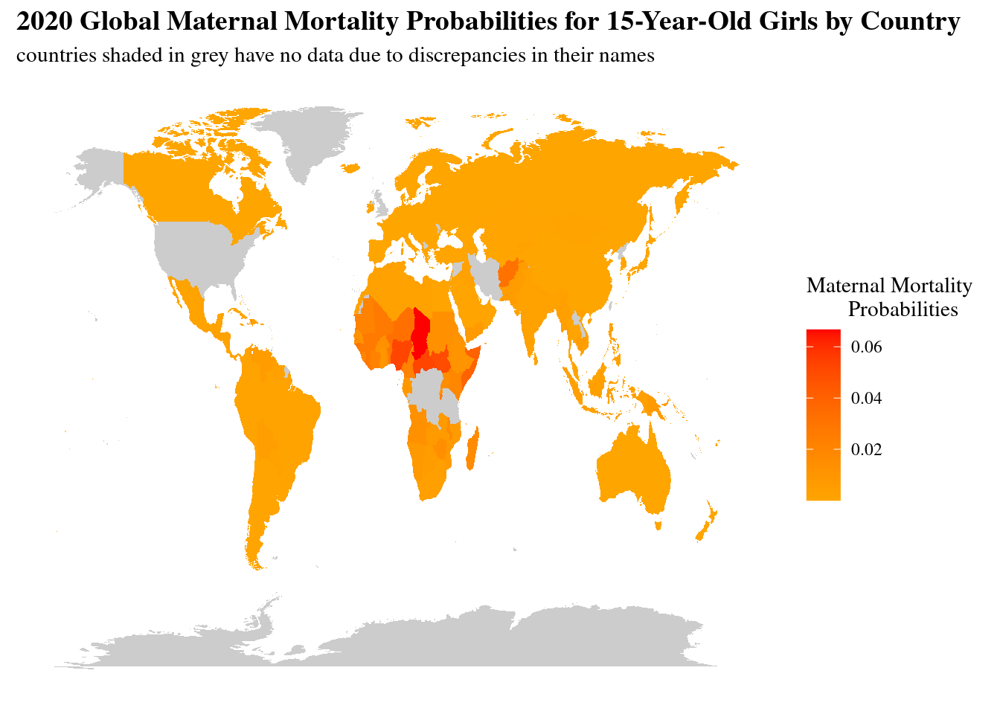

map_world <- map_data("world")
map_data_join <- full_join(total_data_join, map_world, by = c("country" = "region"))
country_map <- ggplot(map_data_join) +
aes(x = long, y = lat, group = group, fill = Probability) +
geom_polygon() +
scale_fill_gradient(low = "orange", high = "red", na.value = "grey80") +
labs(title = "2020 Global Maternal Mortality Probabilities for 15-Year-Old Girls by Country",
subtitle = "countries shaded in grey have no data due to discrepancies in their names",
fill = "Maternal Mortality
Probabilities") +
theme(text = element_text(family = "serif"),
plot.title = element_text(size = 14, face = "bold"),
plot.background = element_rect(fill = "white", color = "white"),
panel.background = element_rect(fill = "white", color = "white"),
panel.grid.major = element_blank(),
panel.grid.minor = element_blank(),
axis.text.x = element_blank(),
axis.text.y = element_blank(),
axis.ticks = element_blank(),
axis.title.x = element_blank(),
axis.title.y = element_blank())
print(country_map)